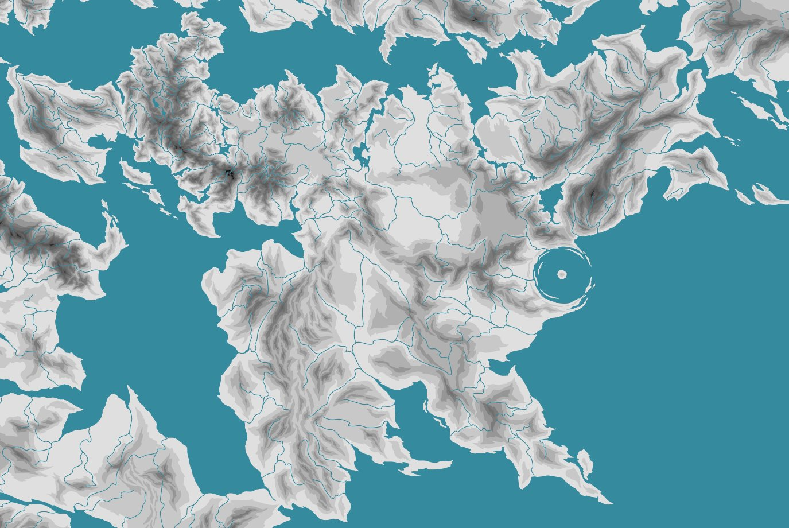

VRZAL
03 —
INSTRUCTOR
EVENTS
SERVICE
STATUSOpen to work — data / AI / automation
STACK
04 —
DATA PIPELINE ·
LANGUAGESPythonSQL
DATAPandasPydanticPower BIStreamlit
ML / AIscikit-learnKerasTensorFlowRasaLLM APIsMCDA
TOOLSDockerGit
ARTHEA
05 — WORLDBUILDING

TECTONICS
TERRAIN
METHODhard worldbuilding · worldbuildingpasta · Madeline James
HISTORY